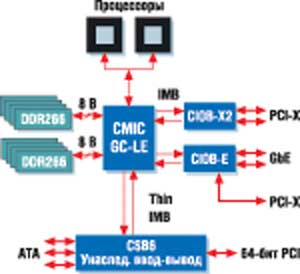
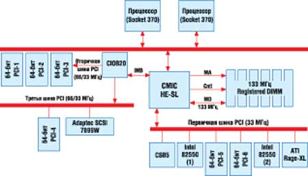
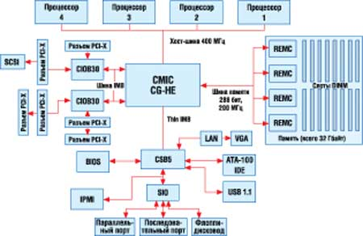
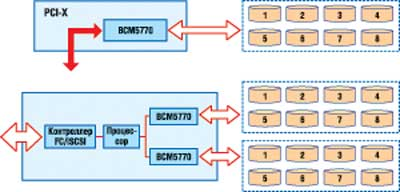

Евгений Рудометов
rudometov@mail.ru
Объединение вычислительных устройств с целью совместного использования их ресурсов требует эффективных серверных решений. Чем больше мощность используемого сервера и чем более критична его миссия, тем больше он нуждается в функциях, обеспечивающих надежность, доступность и эксплуатационную надежность - RAS (Reliability, Availability and Serviceability). Все это обеспечивается оптимальной архитектурой систем, основу которой составляют наборы микросхем системной логики (НМС), во многом определяющие функциональные возможности серверов.
Наборы микросхем ServerWorks серверов и рабочих станций исходно были разработаны одноименной компанией, которую в 2001 г. за 957 млн долл. приобрела Broadcom Corporation (http://www.broadcom.com). Сегодня Broadcom выпускает серверные НМС, созданные как инженерами ServerWorks, так и ее собственными разработчиками на основе перспективных полупроводниковых технологий.
Серверы и рабочие станции, созданные на основе микросхем ServerWorks и процессоров Intel, широко представлены на ИТ-рынке. Их выпускали и продолжают выпускать многие известные компании, среди которых, например, Dell, Fujitsu Siemens, HP, IBM, NEC и другие производители, представившие системы разной производительности и конструкции (для монтажа в стойку, блейд-серверы). Эти системы ориентированы на использование процессоров Intel Pentium III (DP), Intel Pentium 4, Intel Xeon DP, Intel Xeon MP и даже мобильных процессоров Intel Pentium-M.
Архитектура ServerWorks
Логика серверов, центральным звеном которых выступают НМС, определяет число процессоров, которые может использовать система; а от этого зависят ее производительность и надежность работы. НМС также в значительной степени определяют полосу пропускания, емкость и надежность подсистемы памяти, число и скорость работы используемых карт расширения. Кроме того, от микросхем, входящих в состав НМС, зависит эффективность функционирования подсистем ввода-вывода информации. Таким образом, архитектура НМС играет ключевую роль в работе сервера. Плохо разработанная логика может просто "задушить" работу системы.
Традиционно основу современных НМС составляют два компонента - так называемые северный и южный мосты. Микросхема северного моста (North Bridge) связывает центральный процессор (а если их несколько, то все процессоры) с подсистемой оперативной памяти. В дополнение к этому северный мост контролирует работу подключаемых к нему карт расширения, а также поддерживает связь с южным мостом.
В многопроцессорных системах одной из основных функций микросхемы North Bridge становится координация взаимной работы массива центральных процессоров и разделения их ресурсов. К этим ресурсам относятся, кстати, многочисленные шины, входящие в состав архитектуры компьютерной системы, и потоки передаваемой с их помощью информации.
Микросхема южного моста (South Bridge) с помощью встроенных средств и внешних элементов обеспечивает контроль за работой большого числа сравнительно медленных периферийных устройств.
Необходимо отметить, что разделение НМС на компоненты позволяет разрабатывать специализированные микросхемы. Таким образом, за счет комбинирования компонентов обеспечивается эффективное решение задач.
В качестве примера решения для многопроцессорных систем на рис. 1 представлена упрощенная структура сервера, созданного на основе одного из НМС ServerWorks - Grand Champion LE System I/O. Это распространенный набор микросхем системной логики для сегмента серверов, использующих процессоры корпорации Intel.
|  | Рис. 1. Упрощенная конфигурация сервера, созданного на основе НМС ServerWorks Grand Champion LE System I/O.
|
В основе архитектуры этого и других НМС лежат традиционные компоненты - микросхема северного моста, носящая наименование Champion Memory and I/O Controller (CMIC), и южного моста - Open South Bridge (OSB), или Champion South Bridge (CSB). Как следует из особенностей данного НМС ServerWorks, используемых процессоров Intel и их архитектуры Intel NetBurst, пропускная способность процессорной шины на максимальной тактовой частоте составляет 4,2 Гбайт/с. Для обеспечения максимальной загрузки этой шины требуется двухканальная конфигурация подсистемы оперативной памяти, построенной на основе модулей DDR SDRAM - DDR200/DDR266, удовлетворяющих спецификации PC1600/PC2100.
Чтобы обеспечить корректную работу двухканальной подсистемы оперативной памяти, модули устанавливаются парами в слоты, число которых для этого НМС может достигать восьми; соответственно максимальный объем памяти при использовании 2-Гбайт модулей составляет 16 Гбайт. Для повышения надежности работы используется технология обнаружения и исправления ошибок ECC. Кроме того, функция Chipkill обеспечивает восстановление системы в случае выхода из строя микросхем памяти, а также позволяет переключать банки памяти, заменяя их резервными.
Что касается остальных особенностей архитектуры системы, следует отметить компоненты, управляющие платами расширения. Это, в частности, специальные мосты ввода-вывода (I/O bridges), носящие названия CIOB-X2 и CIOB-E.
Компонент CIOB-X2 (Champion I/O Bridge for PCI-X) управляет двумя контроллерами PCI-X, каждый из которых обеспечивает поток информации со скоростью передачи до 1 Гбит/с. Отметим, что спецификация PCI-X 2.0 предусматривает скорость передачи данных 2 или 4 Гбит/с. Но даже при скорости 1 Гбит/с общий поток достигает 2 Гбит/с. Для обеспечения такого потока к северному мосту служит специальная шина Inter-Module Bus (IMB) с пропускной способностью до 3,2 Гбайт/с.
Компонент CIOB-E (Champion I/O Ethernet Bridge for PCI-X) управляет двумя контроллерами Gigabit Ethernet (GbE), а также PCI-X.
Следует еще сказать о микросхеме, выполняющей функции южного моста. Это может быть, например, CSB6 (Champion South Bridge, version 6). Данный компонент обеспечивает загрузку системы, обработку I/O-прерываний, а также поддержку 64-разрядной шины PCI, четырех портов USB, трех интерфейсов дисководов ATA и т. п.
Остается добавить, что для систем разной конфигурации предлагаются и разные компоненты, отличающиеся функциональными возможностями и ценой. Среди них микросхемы северного и южного мостов, а также контроллеры памяти, мосты ввода-вывода, контроллеры Serial ATA. Эти компоненты охватывают широкий диапазон решений от процессоров с архитектурой Intel P6 до Intel NetBurst.
Ниже мы коротко охарактеризуем НМС ServerWorks, предназначенные для разных конфигураций и процессоров, в их эволюционном развитии.
Микросхемы северного моста
LE
Champion Entry Dual Processor System I/O Platform, микросхема северного моста НМС Champion LE System I/O, ориентирована на двухпроцессорные платформы начального уровня (LE означает low end). Поддерживает до двух процессоров Intel Pentium III Xeon (архитектура P6) с шиной FSB частотой 100 или 133 МГц. Управляет потоками информации от процессоров, оперативной памяти и периферийных устройств, отвечающих за ввод-вывод, а также к этим компонентам. В ее состав интегрирован контроллер подсистемы памяти PC100/PC133, интерфейс 64-бит/66-МГц PCI, а также интерфейс 32-бит/33-МГц PCI, обеспечивающий, в частности, подключение к микросхеме южного моста. Поддерживает общий объем оперативной памяти до 4 Гбайт с полосой пропускания до 1,1 Гбайт/с. Обеспечена поддержка функций RAS - очистка памяти и ECC.
HE-SL
Champion Volume Dual Processor System I/O Platform, микросхема северного моста НМС Champion HE-SL System I/O, ориентирована на двухпроцессорные платформы широкого назначения (рис. 2). Поддерживает до двух процессоров Intel Pentium III Xeon (архитектура P6) с шиной FSB 100 или 133 МГц. Управляет потоками информации от процессоров, оперативной памяти и периферийных устройств, отвечающих за ввод-вывод, а также к этим компонентам.
В состав микросхемы HE-SL интегрирован двухканальный контроллер подсистемы памяти PC100/PC133, контроллер шины внутреннего интерфейса ввода-вывода - Inter Module Bus (IMB) I/O interface, а также интерфейс 32-бит/33-МГц PCI, обеспечивающий, в частности, подключение к микросхеме южного моста. Северный мост поддерживает до 6 Гбайт оперативной памяти с полосой пропускания до 2,1 Гбайт/с, а также функции RAS - очистку памяти и ECC. Имеющийся в архитектуре HE-SL канал IMB обеспечивает для ввода-вывода полосу пропускания до 1 Гбайт/с и допускает использование двух шин 64-бит/66-МГц PCI.
|  |
| Рис. 2. Один из вариантов конфигурации сервера, созданного на основе НМС ServerWorks Champion HE-SL System I/O.
|
HE
Champion Enterprise Quad Processor System I/O Platform, микросхема северного моста НМС Champion HE System I/O, ориентирована на четырехпроцессорные высокопроизводительные платформы (HE - high end). Поддерживает до четырех процессоров Intel Pentium III Xeon (архитектура P6) с шиной FSB 100 МГц. Управляет потоками информации от процессоров, оперативной памяти и периферийных устройств, отвечающих за ввод-вывод, а также к этим компонентам.
В состав микросхемы HE интегрирован четырехканальный контроллер подсистемы памяти PC100/PC133, контроллер шины внутреннего интерфейса ввода-вывода - Inter Module Bus (IMB) I/O interface и интерфейс 32-бит/33-МГц PCI, обеспечивающий подключение к южному мосту. Северный мост поддерживает до 16 Гбайт оперативной памяти с полосой пропускания до 4,2 Гбайт/с и функции RAS - очистку памяти и ECC. Канал IMB в архитектуре HE-SL обеспечивает для ввода-вывода полосу пропускания до 1 Гбайт/с и допускает использование двух шин 64-бит/66-МГц PCI.
GC-WS
Grand Champion Volume Workstation Dual Processor System I/O Platform, микросхема северного моста НМС Grand Champion WS (GC-WS) System I/O, обеспечивает поддержку AGP 8Х и ориентирована на двухпроцессорные платформы для рабочих станций. Возможно использование до двух процессоров Intel Xeon (архитектура Intel NetBurst) с шинами FSB 133 МГц, обеспечивающими передачу данных с частотой 533 МГц. Северный мост управляет потоками информации от процессоров, оперативной памяти, графической подсистемы и периферии, отвечающей за ввод-вывод, а также к этим компонентам.
В состав микросхемы GC-WS интегрирован двухканальный контроллер подсистемы памяти DDR266, два контроллера шины внутреннего интерфейса ввода-вывода - Inter Module Bus (IMB) I/O interface, а также один контроллер Thin-IMB I/O interface, который служит для подключения к южному мосту. Северный мост поддерживает до 16 Гбайт оперативной памяти с полосой пропускания до 4,2 Гбайт/с с функциями RAS, включая алгоритм 128-бит ECC, технологии Chipkill и Spare Memory. Созданные в архитектуре GC-WS двойные каналы IMB обеспечивают для ввода-вывода полосу пропускания до 3,2 Гбайт/с каждый.
GC-SL
Grand Champion Entry Dual Processor System I/O Platform, микросхема северного моста НМС Grand Champion SL System I/O, ориентирована на двухпроцессорные серверные платформы начального уровня. Поддерживает до двух процессоров Intel Xeon (архитектура Intel NetBurst) с шинами FSB 100 и 133 МГц, обеспечивающими передачу данных с частотами 400 и 533 МГц. Управляет потоками информации от процессоров, оперативной памяти и периферийных устройств, отвечающих за ввод-вывод, а также к этим компонентам.
В состав микросхемы GC-SL интегрирован контроллер подсистемы памяти DDR200/DDR266, один контроллер шины внутреннего интерфейса ввода-вывода - Inter Module Bus (IMB) I/O interface и один контроллер Thin-IMB I/O interface для подключения к микросхеме южного моста.
Северный мост поддерживает до 4 Гбайт оперативной памяти с полосой пропускания до 2,1 Гбайт/с и функции RAS, в том числе алгоритм 128-бит ECC и технологию Spare Memory. Канал IMB обеспечивает для ввода-вывода полосу пропускания до 3,2 Гбайт/с.
GC-LE
Grand Champion Volume Dual Processor System I/O Platform, микросхема северного моста НМС Grand Champion LE System I/O, ориентирована на двухпроцессорные серверные платформы. Поддерживает до двух процессоров Intel Xeon (архитектура Intel NetBurst) с шинами FSB 100 и 133 МГц, обеспечивающими передачу данных с частотами 400 и 533 МГц. Управляет потоками информации от процессоров, оперативной памяти и периферийных устройств, отвечающих за ввод-вывод, а также к этим компонентам.
В состав микросхемы GC-LE интегрирован двухканальный контроллер подсистемы памяти DDR200/DDR266, два контроллера шины внутреннего интерфейса ввода-вывода - Inter Module Bus (IMB) I/O interface и один контроллер Thin-IMB I/O interface для связи с микросхемой южного моста.
Северный мост поддерживает до 16 Гбайт оперативной памяти с полосой пропускания до 4,2 Гбайт/с и функции RAS - алгоритм 128-бит ECC, технологии Chipkill и Spare Memory.
Двойные каналы IMB в архитектуре компонента GC-LE обеспечивают для ввода-вывода полосу пропускания до 3,2 Гбайт/с каждый.
GC-HE
Grand Champion Enterprise Quad Processor System I/O Platform, микросхема северного моста НМС Grand Champion HE System I/O, ориентирована на четырехпроцессорные высокопроизводительные платформы (рис. 3). Поддерживает до четырех процессоров Intel Pentium 4 Xeon с шинами FSB 100, обеспечивающими передачу данных с частотой 400 МГц. Управляет потоками информации от процессоров, оперативной памяти и периферийных устройств, отвечающих за ввод-вывод, а также к этим компонентам.
В состав микросхемы GC-HE интегрирован четырехканальный контроллер подсистемы памяти DDR200, три контроллера шины внутреннего интерфейса ввода-вывода - Inter Module Bus (IMB) I/O interface и один контроллер Thin-IMB I/O interface для связи с микросхемой южного моста.
Северный мост поддерживает до 64 Гбайт оперативной памяти с полосой пропускания до 6,4 Гбайт/с и функции RAS - алгоритм 128-бит ECC, технологии Chipkill, Spare Memory, Memory Mirroring и Hot Plug Memory Card.
Три канала IMB в архитектуре северного моста обеспечивают для ввода-вывода полосу пропускания до 1,6 Гбайт/с каждый.
|  |
| Рис. 3. Один из вариантов конфигурации сервера, созданного на основе НМС ServerWorks Grand Champion HE System I/O.
|
Микросхемы южного моста
OSB4
Champion Compatible System I/O South Bridge, микросхема Open South Bridge 4 (OSB4), выполняет в системе функции южного моста. Эта микросхема представляет собой многофункциональный элемент, поддерживающий Plug and Play.
Микросхема управляет входящими и исходящими потоками информации, порождаемыми элементами ISA, USB, ATA, SMBus, SuperI/O. В нее интегрированы такие средства, как контроллер прерываний, совместимый с 8259, General Purpose I/O, I/O APIC, контроллер DMA, совместимый с 8237, и т. п. Кроме того, в микросхему OSB4 встроены средства управления питанием: ACPI, Clock Throttling, таймеры/счетчики, совместимые с микросхемой 8254, функция инактивации/выключения электропитания и т. п.
CSB5
Champion and Grand Champion Compatible System I/O South Bridge, микросхема Champion South Bridge 5 (CSB5) выполняет в системе функции южного моста. Это многофункциональный элемент, поддерживающий Plug and Play.
CSB5 служит мостом между PCI и Low Pin Count (LPC), поддерживает двойной канал ATA/100, 4 порта USB 1.1, функции безопасности (passwords and system protection). Управляет входящими и исходящими потоками информации, порождаемыми элементами PCI, USB, ATA, SMBus, LPC и SuperI/O. В состав данной микросхемы интегрированы средства ATA/100, USB, контроллер прерываний, совместимый с 8259, General Purpose I/O, I/O APIC и контроллер DMA, совместимый с 8237.
Связь с северным мостом обеспечивается средствами интерфейса Thin-IMB, используемого в микросхемах северного моста для платформ с архитектурой Pentium 4 и совместимого с интерфейсными средствами, которые применяются в северных мостах для архитектуры Pentium III.
В микросхему OSB5 встроены средства управления питанием: ACPI, Clock Throttling, таймеры/счетчики, совместимые с микросхемой 8254, средства инактивации и выключения электропитания и т. п.
CSB6
Grand Champion Compatible System I/O South Bridge, микросхема Champion South Bridge 6 (CSB6), выполняет функции южного моста и представляет собой многофункциональный элемент с поддержкой Plug and Play.
Южный мост управляет входящими и исходящими потоками информации, порождаемыми элементами PCI, USB, ATA, SMBus, LPC и SuperI/O, поддерживает три канала ATA/100, четыре порта USB 1.1, функции безопасности (passwords and system protection). В состав микросхемы интегрированы средства ATA/100, контроллер прерываний, совместимый с 8259, General Purpose I/O, I/O APIC и контроллер DMA, совместимый с 8237.
Кроме того, в микросхему OSB6 встроены средства управления питанием, к которым относятся ACPI, Clock Throttling, таймеры/счетчики, совместимые с микросхемой 8254, средства инактивации/выключения электропитания и т. п. Реализованы некоторые серверные средства, например, Watchdog, поддержка NVRAM, LCD и Keypad.
Контроллеры памяти
REMC
Grand Champion System I/O Memory Controller, микросхема контроллера памяти Grand Champion Reliability Enhanced Memory Controller (REMC), поддерживает конфигурации 2-Way и 4-Way с чередованием памяти. Четыре микросхемы REMC используются в 4-Way конфигурациях чередуемой памяти для облегчения мультиплексирования и буферизации данных, в то время как пятая применяется в Address Path для генерации множественных копий адреса и контрольных сигналов.
MADP
Champion System I/O Memory Controller, микросхема контроллера памяти Champion Memory Address Data Path Controller (MADP), поддерживает конфигурации 2-Way и 4-Way с чередованием памяти. Четыре микросхемы MADP используются в 4-Way конфигурациях чередуемой памяти для облегчения мультиплексирования и буферизации данных. Одиночный контроллер MADP служит для генерации множественных копий адреса и контрольных сигналов в 2-Way конфигурациях чередуемой памяти.
Контроллеры ввода-вывода
CIOB20
Микросхема Generation Champion 64-bit/66-MHz PCI System I/O Bridge (CIOB20) относится ко второму поколению мостов ввода-вывода (CIOB) для PCI. Она обеспечивает скоростную связь межмодульной шины IMB и двух каналов PCI. Эффективный интегрированный шинный арбитр CIOB20 поддерживает до семи устройств PCI.
Необходимая полоса пропускания обеспечивается микросхемой CIOB-X, поддерживающей работу 64-бит PCI на частотах 33 и 66 МГц. Кроме того, реализуются очереди ввода-вывода, обеспечиваются кэширование, функции RAS и т. п.
CIOB-X
Микросхема Grand Champion 100-MHz PCI-X System I/O Bridge (CIOB-X) - высокоэффективный мост ввода-вывода для систем уровня предприятия. Обеспечивает скоростную связь межмодульной шины IMB и двух каналов PCI-X. Эффективный интегрированный шинный арбитр CIOB-X поддерживает до семи устройств PCI-X.
Необходимая полоса пропускания обеспечивается микросхемой CIOB-X, поддерживающей работу 64-бит PCI-X на частотах 33, 66 и 100 МГц. Кроме того, реализуются очереди ввода-вывода, обеспечиваются кэширование, RAS и т. п.
CIOB-X2
Микросхема Grand Champion 133-MHz PCI-X System I/O Bridge (CIOB-X2) принадлежит ко второму поколению мостов ввода-вывода (CIOB) для PCI-X. Предназначена для систем уровня предприятия. Обеспечивает скоростную связь межмодульной шины IMB и двух каналов PCI-X. Эффективный интегрированный шинный арбитр CIOB-X2 поддерживает до семи устройств PCI-X.
Необходимая полоса пропускания обеспечивается микросхемой CIOB-X, поддерживающей работу 64-бит PCI-X на частотах 33, 66, 100 и 133 МГц. Кроме того, реализуются очереди ввода-вывода, обеспечиваются кэширование, RAS и т. п.
CIOB-G2
Микросхема Grand Champion 8X AGP Workstation Graphics System I/O Bridge относится ко второму поколению мостов ввода-вывода для графических подсистем. Обеспечивает высокоэффективный путь данных между межмодульной шиной IMB и подсистемой графики. Поддерживает шинный интерфейс AGP для графических устройств, а также интерфейс с подсистемой памяти через микросхему северного моста GC-WS.
CIOB-E
Микросхема Grand Champion Dual Gigabit Ethernet (Copper)/PCI-X System I/O Bridge (CIOB-E) - это высокопроизводительный мост для систем уровня предприятия. Обеспечивает скоростную связь подсистемы ввода-вывода и межмодульной шины IMB. Микросхема CIOB-E поддерживает двойной Gigabit Ethernet Media Access Controller (MACs) и 64-бит PCI-X (33, 66, 100 МГц).
CIOB-ES
Микросхема Grand Champion Dual Gigabit Ethernet (SerDes)/PCI-X System I/O Bridge (CIOB-ES) - это высокопроизводительный мост для систем уровня предприятия. Обеспечивает скоростную связь между подсистемой ввода-вывода и межмодульной шиной IMB.
Микросхема CIOB-ES поддерживает двойной Gigabit Ethernet MACs, двойной Gigabit Ethernet по SerDes и медным проводам, 64-бит PCI-X (33, 66, 100 МГц).
Контроллеры Serial ATA
SWC-IB7452, SWC-IB7453
Микросхема ServerWorks Dual Channel SATA System I/O Multiplexer (SWC-IB7452) - это построенный на одной микросхеме высокопроизводительный двухпортовый мост SATA в SATA или SATA в ATA. Содержит два входящих порта SATA 1.0 и исходящий порт, который можно конфигурировать как SATA или ATA. Микросхема SWC-IB7452 позволяет применять традиционные стандартные ATA-устройства в оборудовании, поддерживающем SATA, и устройства SATA в том же окружении.
Микросхема ServerWorks Quad Port SATA System I/O Controller (SWC-IB7453) - это высокопроизводительный контроллер, обеспечивающий преобразование интерфейсов порта PCI-X и четырех портов SATA 1.0.
BCM5770R/BCM5770
Микросхемы Quad/Octal-Port SATA/PCI-X Controller BCM5770 и BCM5770R - это высокоинтегрированные многопортовые контроллеры SATA I, созданные для высокоэффективных накопителей, работа которых характеризуется низкой загрузкой центрального процессора, но требует максимальной производительности подсистемы ввода-вывода.
Контроллеры подключаются через 64-разрядную шину PCI-X 1.0, работающую на тактовой частоте 133 МГц (рис. 4). BCM5770R обеспечивает управление четырьмя устройствами SATA, а BCM5770 - восемью. Оба контроллера поддерживают горячее подключение устройств. Это позволяет вставлять и удалять накопители SATA, находящиеся в стойке внешней памяти или в блоке сервера, не прерывая работу системы.
|  |
| Рис. 4. Схема использования контроллеров BCM5770 и BCM5770R во встроенных и внешних подсистемах дисковой памяти.
|
BCM5771
Микросхема Dual-Port SATA II to SATA II Bridge BCM5771 представляет собой высокопроизводительное решение на одной микросхеме, осуществляющее преобразование SATA в SATA или SATA в ATA.
Перспективы
Перспективные технологии не проходят мимо внимания разработчиков новых моделей НМС ServerWorks и специализированных компонентов наборов системной логики, используемых в архитектуре многопроцессорных серверов и мощных рабочих станций.
В последнее время в Интернете появились сообщения о работах конструкторов по реализации таких инноваций, как технология динамического сжатия данных MXT (Memory eXpansion Technology), разработанная IBM. Эта технология теоретически способна вдвое увеличить информационный объем памяти, не меняя ее физического размера.
Кроме того, появилась информация о том, что разработчики НСМ ServerWorks планируют расширить диапазон используемых процессоров. Так, работая над новыми решениями, ориентированными на процессоры корпорации Intel, создатели специализированных наборов не оставляют без внимания альтернативные процессоры. Планируются, например, НМС для решений, ориентированных на серверные процессоры компании AMD. В разных источниках сообщается о том, что готовятся к выпуску серии НМС, рассчитанных на одно-, два-, четырех- и даже восьмипроцессорные серверные системы на базе AMD Opteron. Как ожидается, все версии НМС будут поддерживать перспективную высокопроизводительную шину PCI Express. А после реализации данных планов можно ожидать выпуска НМС ServerWorks для систем на базе 16 и 32 процессоров AMD Opteron.